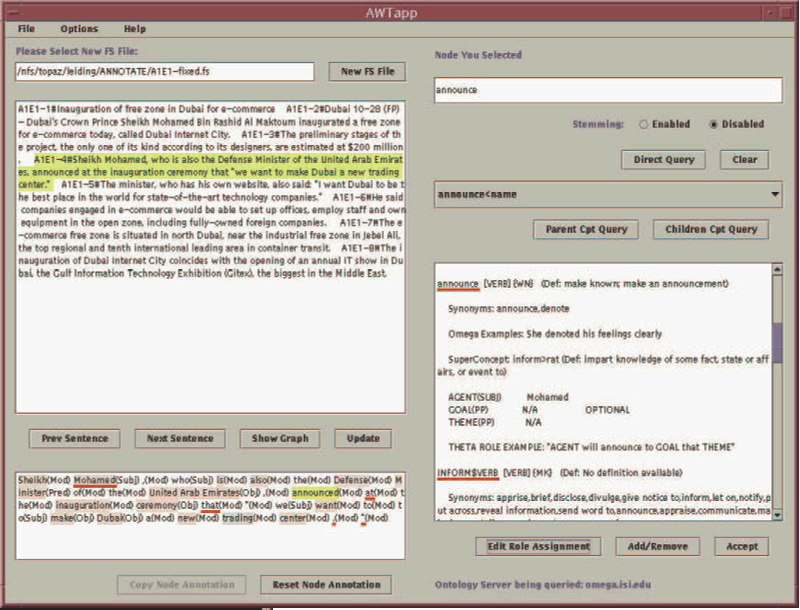

Tools


Tiamat
Purpose
Visualizes IL0 and enables production of IL1.
This tool enables viewing of the IL0 tree with easy reference to all of the IL resources, current IL representation, ontology, and theta grids. Tiamat provides the ability to annotate text via simple point-and-click selections of words, concepts, and theta-roles. An annotator may select a lexical item (leaf node) to be annotated in the sentence view; this word is highlighted, and the relevant portion of the Omega ontology is displayed in the pane on the left. If this word has dependents, they are automatically underlined in red in the sentence view. Annotators can view all information pertinent to the process of deciding on appropriate ontological concepts in this view. Selection of concepts, theta grids and roles appropriate to that lexical item can then be made in the appropriate panes. Reeder 2004, p. 4
Example
Sheikh Mohamed, who is also the Defense Minister of the United Arab Emirates, announced at the inauguration ceremony that "we want to make Dubai a new trading center."

Anonymous 2004, p. 10